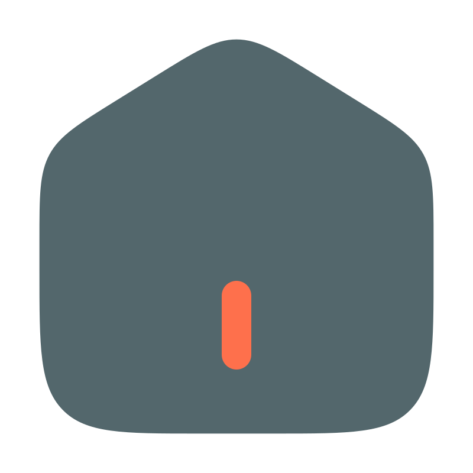

@if (windowState$ | async; as windowStates) {

@if (windowStates[HOME] && windowStates[HOME]?.status !== CLOSED) {
}

@if (windowStates[EXPERIENCES] && windowStates[EXPERIENCES]?.status !== CLOSED) {
}
@if (windowStates[PROJECTS] && windowStates[PROJECTS]?.status !== CLOSED) {
}

@if (windowStates[CONTACT] && windowStates[CONTACT]?.status !== CLOSED) {
}
@if (contactsService.contacts().length > 0) {
@for (contactMethod of contactsService.contacts(); track contactMethod.name) {
} } }